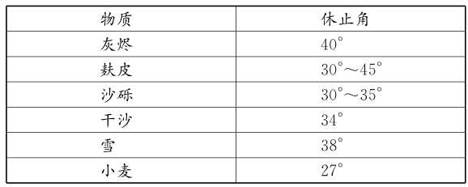

84 休止角
数学概念：休止角
你可以在任何地方找到数学，甚至是你的餐桌上，比如在一张纸上倒一堆盐，它会形成一个锥体，虽然看着不美观，但也能体现一个数学现象———休止角，即盐堆表面与桌子的水平面所成的角。
其实，所有颗粒物料，包括沙子和石块，都有休止角，甚至是山崩时从山上滚落的巨石。另外，休止角并不是随机的，它每次出现时都不会变化，而是取决于一些因素的组合，包括颗粒的大小、颗粒是光滑的还是有尖突的、颗粒之间是否有水分（可能让颗粒黏在一起），以及下表面有多粗糙。
食盐的休止角是32°，其他物料的休止角可能更大，比如树皮和椰子片的休止角是45°；也可能更小，比如湿黏土的休止角是45°。人们甚至可以利用休止角来计算一堆物料，如沙砾，是不是会崩塌。
下次家庭聚会的时候，试试把盐从盐罐里倒出来吧，告诉其他人你是在做数学实验！

各种物质的休止角